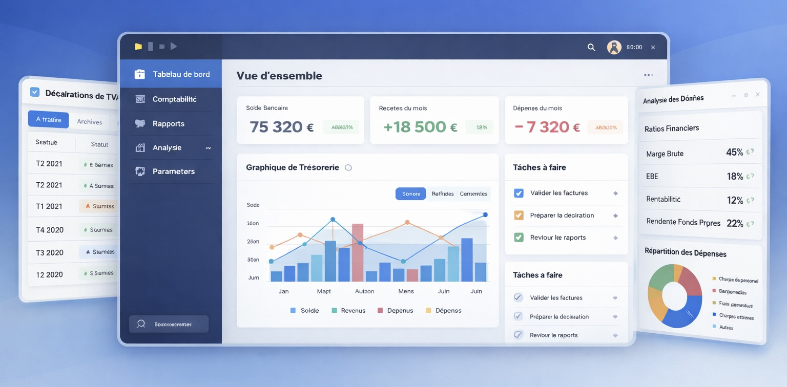
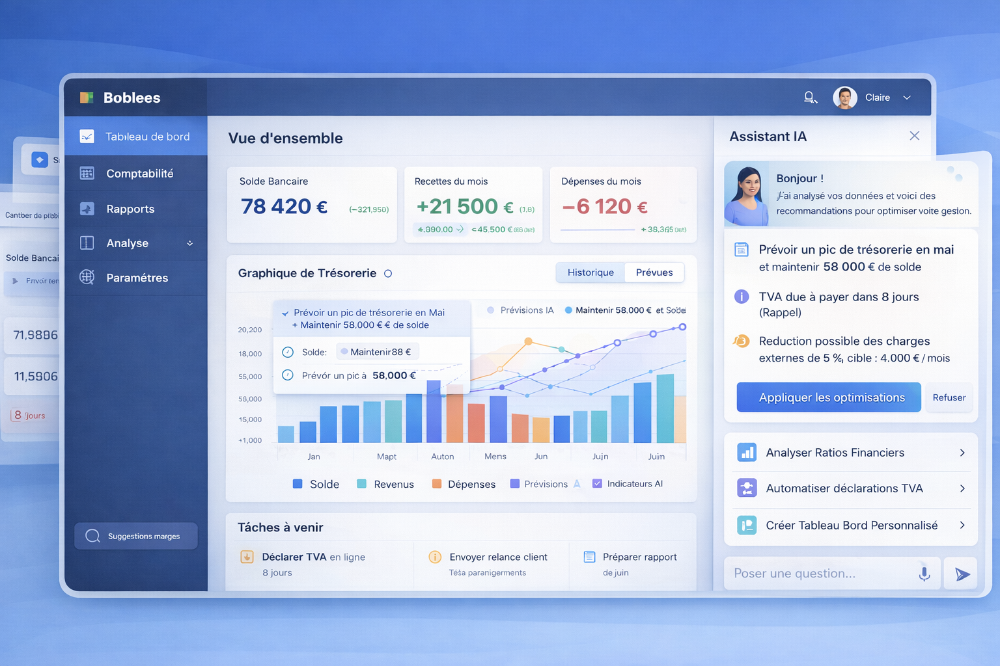

Étude de cas
Audit UX-UI du SaaS Bobbee
Réalisation d’un audit design pour identifier les points de friction d’un logiciel SaaS de comptabilité et proposer des améliorations de parcours, d’interface et d’intégration de fonctionnalités basées sur l’IA.

Contexte
Bobbee est un logiciel intelligent de comptabilité, de gestion financière et d’analyse de données. L’objectif du produit est de créer une base de données collaborative entre cabinets comptables et entrepreneurs, permettant d’accéder à l’ensemble des informations financières en temps réel.
Dans le cadre de l’évolution du produit, les équipes souhaitaient améliorer l’expérience utilisateur, optimiser la productivité des utilisateurs, et préparer l’intégration de nouvelles fonctionnalités, notamment autour de l’intelligence artificielle.
Problème
Au fil du développement du produit, l’interface a évolué progressivement et a créé certaines incohérences dans les données remontées. Plusieurs signaux indiquaient également que certains parcours étaient jugés complexes ou peu intuitifs par les utilisateurs.
Des difficultés d’usage remontaient régulièrement via le support et les retours utilisateurs, mais ces problématiques n’avaient pas encore été analysées de manière structurée.
Objectifs
- Évaluer l’ergonomie et la cohérence globale de l’interface.
- Analyser l’expérience utilisateur et identifier les points de friction dans les parcours.
- Recueillir des retours utilisateurs qualitatifs et quantitatifs.
- Proposer des améliorations concrètes via des recommandations et des prototypes.
- Identifier des opportunités d’intégration de fonctionnalités basées sur l’IA.
Recherche
Pour comprendre les problématiques d’usage et confronter les hypothèses à la réalité du terrain, j’ai combiné plusieurs méthodes d’analyse ergonomique et de recherche utilisateur.
Méthodes utilisées
- Audit ergonomique basé sur les 10 heuristiques de Nielsen (160 critères)
- Analyse UX, UI et accessibilité via un outil automatisé (IA) basé sur GPT
- Questionnaire utilisateur en ligne
- Entretiens utilisateurs en 1-to-1

Principaux enseignements
- De nombreuses règles d'accessibilité n'étaient pas respectées et allaient servir directement d'axes d'amélioration pour l'utilisabilité et l'expérience utilisateur globale.
- Des incohérences et anomalies techniques freinaient l'adoption de certaines fonctionnalités.
- Les tableaux étant riches en informations, ils nécessitaient une amélioration de la lisibilité et de l'affichage des actions possibles.
- Les utilisateurs exprimaient un fort intérêt pour la valeur de Bobbee et sa proposition.
- Ils ont également exprimé le souhait de pousser davantage l'automatisation de certaines tâches, révélant plusieurs opportunités d’intégration de fonctionnalités IA.
Solution
À partir des analyses et des retours utilisateurs, j’ai formulé plusieurs recommandations visant à améliorer l’expérience globale du produit et à préparer son évolution.
Ce que j’ai proposé
- Amélioration de la lisibilité et de la hiérarchie de l’information dans les interfaces.
- Clarification de certaines interactions, avec des boutons plus explicites, des libellés plus clairs et de meilleurs retours système.
- Correction et priorisation des anomalies techniques identifiées pendant l’audit.
- Mise en conformité de plusieurs éléments d’accessibilité, notamment les contrastes, les tailles minimales et la lisibilité générale.
- Identification d’opportunités de fonctionnalités basées sur l’IA pour automatiser certaines tâches et faciliter l’accès à l’information.
Pourquoi
Ces recommandations visaient à réduire la charge cognitive des utilisateurs et à améliorer leur satisfaction comme leur productivité au quotidien. Dans un outil riche en données et en actions, la lisibilité, la clarté des parcours et la compréhension des interfaces jouent un rôle essentiel dans l’adoption du produit.
L’enjeu était également d’aider les équipes produit à structurer les prochaines évolutions du service, en proposant des améliorations concrètes à court terme, mais aussi des pistes plus stratégiques autour de l’automatisation et de l’intelligence artificielle.

Résultats de la mission
La mission a permis de fournir aux équipes produit une vision structurée de l’expérience utilisateur et des pistes concrètes d’amélioration pour les futures évolutions du produit.
Mon rôle
Dans cette mission, j’étais responsable de l’ensemble de la démarche UX, de l’analyse de l’expérience existante jusqu’à la formulation de recommandations produit.
- Réalisation de l’audit ergonomique, UX-UI et d'accessibilité
- Conception et diffusion d'un questionnaire utilisateur
- Conduite des entretiens utilisateurs
- Analyse des données et synthèse des insights
- Identification d’opportunités produit et d’intégration de l’IA
- Conception de propositions UX et de prototypes